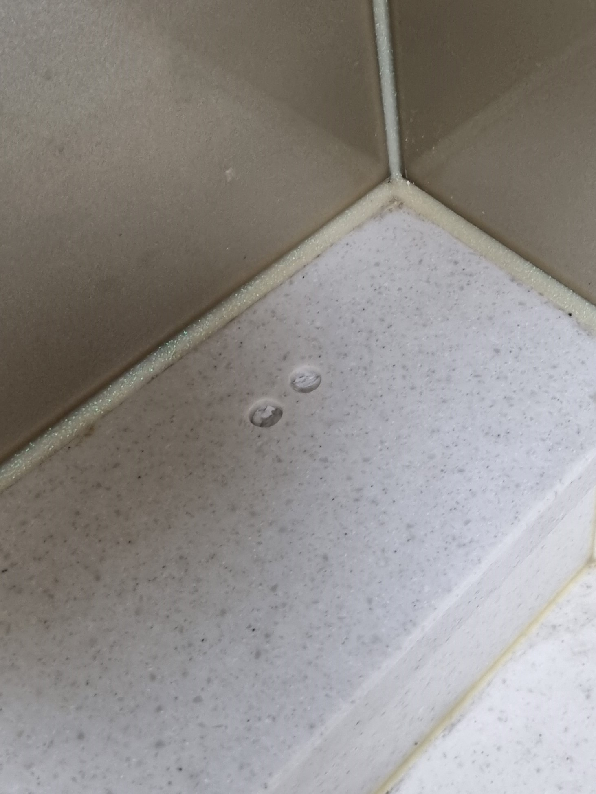
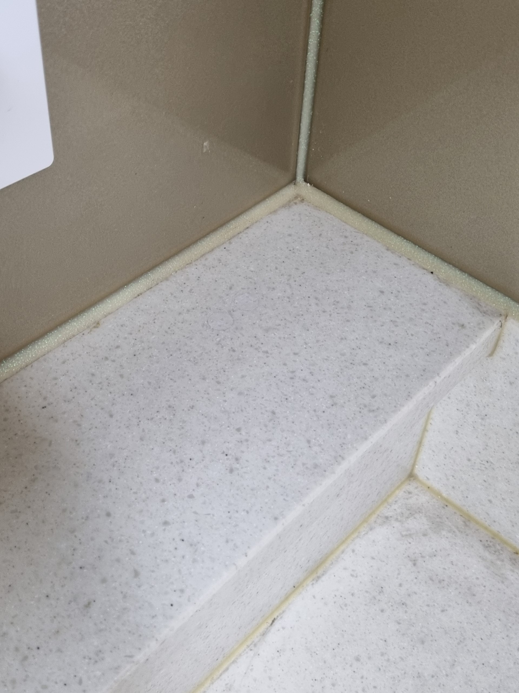

기존 상판 유지
멀쩡한 상판은 그대로 두고 구멍이 남은 부분만 복원합니다.
이사를 앞두고 정수기를 철거한 뒤 싱크대 상판 모서리에 배관용 구멍 두 개가 남은 현장입니다. 집주인에게 인계하기 전 원상복구가 필요했지만, 작은 구멍 때문에 상판 전체를 교체하기보다 기존 상판을 살리는 부분복원으로 진행했습니다.

인조대리석 상판은 한 가지 색처럼 보여도 작은 점과 색 입자가 섞여 있습니다. 구멍의 내부를 안정적으로 채운 뒤 주변 상판의 바탕색과 점무늬를 함께 맞춰야 복원 부위가 덜 눈에 띕니다.
정수기 구멍처럼 손상이 국소적이라면 기존 싱크대 상판을 철거하지 않고 필요한 부분만 복원할 수 있습니다.
멀쩡한 상판은 그대로 두고 구멍이 남은 부분만 복원합니다.
철거와 재설치 범위를 줄여 비교적 짧은 시간에 마무리할 수 있습니다.
주방 전체 공사보다 소음과 먼지, 사용 불편을 줄일 수 있습니다.
정수기·식기세척기 철거 후 남은 국소 구멍 복구에 적합합니다.
구멍을 단순히 덮는 것이 아니라 내부 보강부터 색상과 점무늬, 표면 높이까지 단계별로 맞춥니다.
주변 벽과 상판을 보호하고 구멍의 크기, 깊이, 상판 상태를 확인합니다.
배관 철거 후 남은 이물질과 약해진 가장자리를 정리합니다.
구멍 내부를 안정적으로 보강하고 기존 상판 높이에 맞게 형태를 잡습니다.
주변 상판의 바탕색과 작은 입자 무늬를 확인해 자연스럽게 연결합니다.
표면 단차를 줄이고 여러 각도에서 색상과 질감을 확인해 마무리합니다.
두 개의 배관 구멍을 내부부터 보강하고 기존 인조대리석 상판의 밝은 바탕색과 작은 점무늬가 이어지도록 마무리했습니다.

“완전 새 상판 같네요~ 구멍이 어디 있었는지 저도 모르겠어요~ 집주인분이 보시고 완전 만족하시더라고요^^ 감사합니다!”
상판 전체와 구멍을 함께 보내주시면 재질과 손상 상태를 확인해 상담합니다.